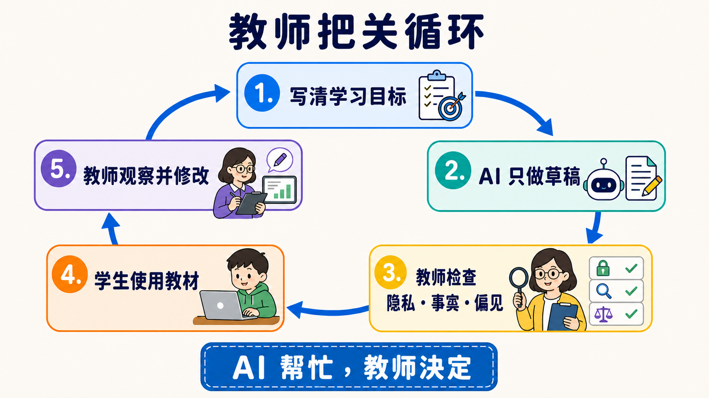
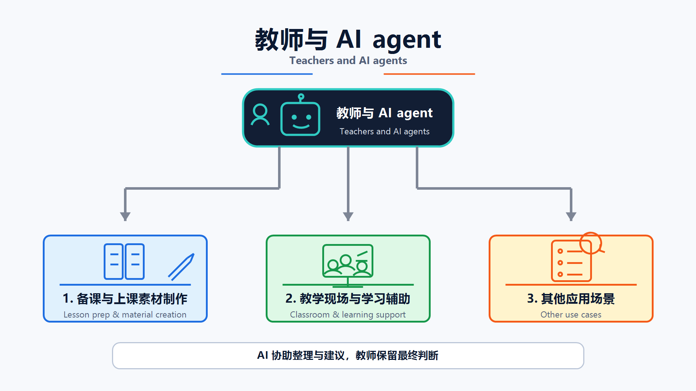

原课程本地核对资料，保留原内容与顺序。外链已改为本地阅读入口。命令中的原仓库路径请按本课运行指南换成实际位置；版本差异见本课说明。MIT © 2026 Wenyu Chiou。
教师延伸路线（For Teachers / Educators）
📌 这条路帮你做什么
AI 可以先做草稿，教师负责决定能不能用。这条路教你用 AI 准备教材、设计练习与整理反馈，同时保护学生数据，不把判断交给机器。
第一次来，先做本页的小练习。你只需要一个学校核准的 AI 工具；不需要先学编程。想做大量自动化时，再走 Track A。
🎯 学习目标
完成这一页后，你可以：
- 先写清楚学生要学会什么，再请 AI 帮忙。
- 分清“提供提示”和“替学生完成答案”。
- 用人工检查守住事实、隐私、公平与学术诚信。
- 从一个低风险活动开始，再决定是否扩大使用。
🧩 八个核心词
- Learning Objective（学习目标）：这堂课结束时，学生应该能做出的具体行为，例如“能用自己的话解释水循环”。
- Scaffolding（脚手架）：先给提示、范例或步骤，等学生会做后再慢慢拿掉，像学骑车时的辅助轮。
- Rubric（评分规则）：先写出可观察的判准，让教师和学生知道作品会怎样被看。Rubric 可以请 AI 草拟，但要由教师定稿。
- Formative Assessment（形成性评估）：学习途中做的小检查，用来决定下一步怎么教，不是只在最后给一个分数。
- AI Literacy（AI 素养）：知道 AI 能做什么、会错在哪里，并能负责任地使用和说明它。
- Student Data（学生数据）：能直接或间接认出学生的数据，例如姓名、学号、作品、成绩、声音或行为记录。
- Human Review（人工审查）：人真的读过输出、核对来源并做决定，不是只按一下“接受”。
- Academic Integrity（学术诚信）：清楚说明哪些协助可以用、哪些必须自己完成，以及何时要披露或引用 AI。
🛡 先守住五条安全线
- 先看校方政策：学校规则、核准工具与家长／学生通知要求，比这份学习地图优先。
- 不要放学生数据：练习先用虚构内容。未经校方核准，不把姓名、作品、成绩或可识别记录贴进工具。
- 教师保留决定权：AI 可以草拟反馈与 Rubric；成绩、纪律、升学或特殊教育等重大决定由合格人员负责。
- 每次都要 Human Review：核对事实、引用、偏见、年龄适切性、无障碍需求与课程目标。
- 把使用规则说清楚：让学生知道什么可以用、如何披露，以及哪些学习证据必须自己完成。

🛠 第一个练习：做一份可检查的课堂活动草稿
这是虚构情境，不要放学生数据。把下面整段复制到学校核准的 AI 工具：
这是一个虚构的课堂情境，不含真实学生数据。
请帮我草拟一个 15 分钟的小学高年级活动，主题是“为什么影子会变长或变短”。
请提供：
1. 一个可观察的 Learning Objective。
2. 一个只用纸、笔和手电筒就能做的活动。
3. 两层 Scaffolding：先给小提示，再给较明确提示；不要直接说答案。
4. 一题 Formative Assessment。
5. 一张 Exit Ticket，只有两个短问题。
6. 列出教师使用前必须核对的三个科学事实。
用简短句子。不要替真实学生评分，也不要假装知道学生的能力或需求。
拿到草稿后，不要直接发给学生。做一次 Human Review：
- [ ] Learning Objective 能看出学生要做什么。
- [ ] 科学事实能从课本或可靠来源核对。
- [ ] 提示是在帮学生思考，不是在替学生作答。
- [ ] 材料、语言和活动适合这个年龄与班级。
- [ ] 没有 Student Data，也没有让 AI 决定成绩。
📚 必读
- UNESCO — Guidance for Generative AI in Education and Research ⭐⭐⭐⭐⭐：先看以人为中心、数据隐私与年龄适切原则。
- European Commission — Ethical Guidelines for Educators ⭐⭐⭐⭐⭐：用情境与问题检查伦理、数据与 AI Act／GDPR 边界。
- TeachAI — AI Guidance for Schools Toolkit ⭐⭐⭐⭐⭐：把原则转成校方政策、课堂规则与沟通流程。
先读自己学校的政策，再读上面三份。官方指引告诉你要问哪些问题，不能替你的学校或所在地做法律判断。
⭐ 精选 Projects 与学习资源
指引、服务可用性、repository 状态与授权于 2026-08-29 UTC 依据官方页面与 GitHub API 查核。推荐度是本学习地图的编辑评分，不是 GitHub stars 或性能排名。
| 分类 | 项目／文档 | 评分 | 用途 | 限制 |
|---|---|---|---|---|
| 安全与政策 | ⭐⭐⭐⭐⭐ | 建立以人为中心的校内原则 | 现行；官方指南 全球原则仍要配合所在地规则与年龄要求 | |
| ⭐⭐⭐⭐⭐ | 检查数据、透明度与课堂风险 | 现行；官方指南 AI Act／GDPR 说明以欧盟情境为主 | ||
| ⭐⭐⭐⭐⭐ | 草拟学校 AI 指引与沟通材料 | 现行；教育工具包 范本不是可直接复制的校方政策，仍需利害关系人审查 | ||
| 需由学校核准的教师云工具 | ⭐⭐⭐⭐ | 备课、标准对照与教师工作流 | 限区可用；云服务 目前面向通过验证的美国 K-12 教师；不能把产品方案当全球通用 | |
| ⭐⭐⭐⭐ | 在学校管理的 workspace 草拟教材 | 限区可用；云服务 目前面向通过验证的美国 K-12 教育工作者；仍须遵守校方 Student Data 规则 | ||
| ⭐⭐⭐⭐⭐ | 用指定来源做摘要、提问与 citation 回查 | 正式可用；云服务 分享、保存与数据使用依账号而异；先看学校政策和 Workspace for Education 条款 | ||
| 可改编课程 | ⭐⭐⭐⭐⭐ | 改编成 Agent 入门课或工作坊 | 活跃；Apache-2.0 它教人建立 Agent，不是教师日常工具 | |
| ⭐⭐⭐⭐⭐ | 使用中文章节与实作教 Agent | 活跃；CC BY-NC-SA 4.0 非商业授权；改编与散布前先读完整条款 | ||
| ⭐⭐⭐⭐ | 挑选短课程、notebook 与练习 | 活跃；MIT 工具与 SDK 版本变动快，授课前先重跑范例 | ||
| 模板与进阶流程 | ⭐⭐⭐⭐⭐ | 参考文件、投影片与 spreadsheet Skills | 活跃；各文件夹授权不同 不是整个 repository 一张授权；重用前逐文件夹读授权 | |
| ⭐⭐⭐⭐ | 参考 planning、写作与 review 工作流 | 活跃；MIT 通用 workflow 仍要加校方政策与人工 gate | ||
| ⭐⭐⭐ | 比较不同 prompt 写法 | 活跃；MIT／CC0 双轨 社群内容质量不一；先挑选、核对，再拿进课堂 |
✅ 完成检查与下一站
- [ ] 我先读过校方政策，知道哪些工具可以用。
- [ ] 我能说明 Scaffolding、Formative Assessment 与 Rubric 的差别。
- [ ] 我用虚构内容完成一个活动草稿，并逐项 Human Review。
- [ ] 我没有上传 Student Data，也没有把成绩或重大决定交给 AI。
下一站：做日常自动化可走 Track A；自己建立教学 Agent 可走 Stage 3；要做教材知识库可走 Stage 6；也做研究则看研究人员路线。
⏱ 展开：时间、工具、费用与如何开始
第一个练习约需 20–30 分钟。先用学校核准的聊天工具与虚构数据，不需要 API、CLI 或付费方案。
- 只做一次备课：停留在网页工具即可。
- 需要用自己的来源：先确认学校账号的文件、分享、保存与训练条款，再使用来源型 notebook。
- 每周重跑相同流程：阅读 Track A，但先和校方 IT 确认账号、权限与数据边界。
- 价格与方案会变化；本页不保存固定费用或“几分钟一定完成”的承诺。
🧪 展开：三类教学使用场景

备课与教材
AI 可以草拟教案、题目、Rubric、投影片大纲与多语版本。教师要核对课纲、事实、难度、授权与无障碍需求。
课堂与学习支援
AI 可以扮演练习对象、提出苏格拉底式问题、提供分层提示或整理常见错误。不要让它假装诊断学生，也不要因一次回答就决定能力、需求或成绩。
行政与沟通
AI 可以草拟家长信、会议摘要与常见问题。寄出前删除不必要的个人数据、核对语气与事实，并由负责的人批准。
🧪 展开：两个额外的可复制模板
Rubric 草稿
这是虚构作业，不含学生数据。
学习目标：[贴上 2–3 条]
请草拟一份四级 Rubric。每一级都要使用可观察的行为，不要只写“很好”或“不好”。
最后列出教师需要自己决定的地方，不要替学生评分。
常见错误整理
以下是我自己写的三个虚构错误例子：[贴上例子]
请把错误分组，说明每组可能缺少哪个概念，并各给一个不直接说答案的提示。
不要推测学生身份、能力、健康或特殊教育需求。
⚙️ 展开：进阶自动化与替代方案
大量处理教材、Email 或表单时，先把流程切成：选择数据 → 移除不必要信息 → AI 草拟 → 人工检查 → 批准 → 发布。每一步都要能停下。
- 文件与投影片：先看 anthropics/skills 的文件夹边界和个别授权。
- 课程 Agent：先完成 Stage 3，再加工具；不要一开始就接 LMS 写入权限。
- 私有教材知识库：看 Stage 6，并先确认教材授权、保存位置与删除方式。
- 找不到核准的云端工具：改用不含学生数据的离线草稿流程，或请校方 IT 提供合规环境。
🤝 展开：法规提示、排错与社群贡献
法规与政策依地区、年龄、机构和工具合约不同。FERPA、GDPR、台湾《个人资料保护法》或其他规则是否适用，应由校方与合格人员判断；本页不是法律意见。
| 问题 | 先怎么做 |
|---|---|
| AI 草稿看起来很完整 | 要求列出待核对事实，再逐条回到课本或可靠来源 |
| 不确定能不能贴学生作品 | 先不要贴；查校方政策、家长／学生通知和工具条款 |
| 活动只会让学生抄答案 | 改成分层提示、要求说理由，并保留不用 AI 也能完成的路径 |
| 工具不支持你的地区或账号 | 不绕过限制；换校方核准工具或只使用公开、虚构内容 |
欢迎贡献学科专用模板、年龄适切案例、LMS 安全整合与经过教师实测的工作流。请见 CONTRIBUTING.zh-Hans.md。